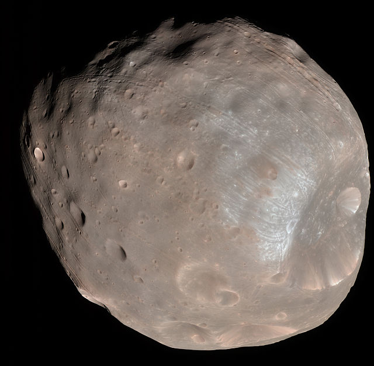

Mar's Fake Moon 1
Mars has two relatively small natural moons, Phobos (about 14 miles in diameter) and Deimos (about 8 miles in diameter), which orbit close to the planet.

Mar's Fake Moon 2
Asteroid capture is a long-favored theory, but their origin remains uncertain.Both satellites were discovered in 1877 by Asaph Hall; they are named after the characters Phobos (panic/fear) and Deimos (terror/dread), who, in Greek mythology, accompanied their father Ares, god of war, into battle. Mars was the Roman counterpart of Ares.In modern Greek, though, the planet retains its ancient name Ares (Aris: Άρης).